DUMP 1
tree [0x608000000120]: size = 1 variables: { 0 ('x') = -666.000000 1 ('y') = -666.000000 2 ('z') = -666.000000 3 ('a') = -666.000000 4 ('b') = -666.000000 IMAGE -----------------------------------END-TreeDump------------------------
-----------------------------------END-TreeDump------------------------
DUMP NUMBER 1 -----------------------------------TreeDump------------------------DUMP 1
tree [0x608000000120]: size = 1 variables: { 0 ('x') = -666.000000 1 ('y') = -666.000000 2 ('z') = -666.000000 3 ('a') = -666.000000 4 ('b') = -666.000000 IMAGE
DUMP NUMBER 2 -----------------------------------TreeDump------------------------DUMP 2
tree [0x608000000120]: size = 8 variables: { 0 ('x') = -666.000000 1 ('y') = -666.000000 2 ('z') = -666.000000 3 ('a') = -666.000000 4 ('b') = -666.000000 IMAGE-----------------------------------END-TreeDump------------------------
DUMP NUMBER 3 -----------------------------------TreeDump------------------------DIFF TREE DUMP 2
tree [0x608000000120]: size = 8 variables: { 0 ('x') = -666.000000 1 ('y') = -666.000000 2 ('z') = -666.000000 3 ('a') = -666.000000 4 ('b') = -666.000000 IMAGE -----------------------------------END-TreeDump------------------------
DUMP NUMBER 4 -----------------------------------TreeDump------------------------DIFF TREE DUMP 3
tree [0x6080000001a0]: size = 1 variables: { 0 ('x') = -666.000000 1 ('y') = -666.000000 2 ('z') = -666.000000 3 ('a') = -666.000000 4 ('b') = -666.000000 IMAGE 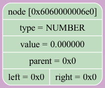 -----------------------------------END-TreeDump------------------------
DUMP NUMBER 5 -----------------------------------TreeDump------------------------DIFF TREE DUMP 4
tree [0x6080000001a0]: size = 1 variables: { 0 ('x') = -666.000000 1 ('y') = -666.000000 2 ('z') = -666.000000 3 ('a') = -666.000000 4 ('b') = -666.000000 IMAGE 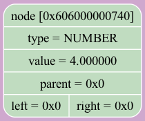 -----------------------------------END-TreeDump------------------------
DUMP NUMBER 6 -----------------------------------TreeDump------------------------DIFF TREE DUMP 5
tree [0x6080000001a0]: size = 1 variables: { 0 ('x') = -666.000000 1 ('y') = -666.000000 2 ('z') = -666.000000 3 ('a') = -666.000000 4 ('b') = -666.000000 IMAGE 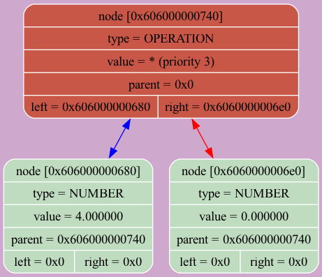 -----------------------------------END-TreeDump------------------------
DUMP NUMBER 7 -----------------------------------TreeDump------------------------DIFF TREE DUMP 6
tree [0x608000000120]: size = 8 variables: { 0 ('x') = -666.000000 1 ('y') = -666.000000 2 ('z') = -666.000000 3 ('a') = -666.000000 4 ('b') = -666.000000 IMAGE 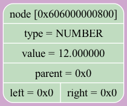 -----------------------------------END-TreeDump------------------------
DUMP NUMBER 8 -----------------------------------TreeDump------------------------DIFF TREE DUMP 7
tree [0x608000000120]: size = 8 variables: { 0 ('x') = -666.000000 1 ('y') = -666.000000 2 ('z') = -666.000000 3 ('a') = -666.000000 4 ('b') = -666.000000 IMAGE 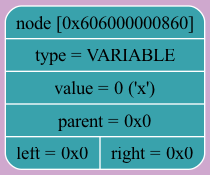 -----------------------------------END-TreeDump------------------------
DUMP NUMBER 9 -----------------------------------TreeDump------------------------DIFF TREE DUMP 8
tree [0x608000000120]: size = 8 variables: { 0 ('x') = -666.000000 1 ('y') = -666.000000 2 ('z') = -666.000000 3 ('a') = -666.000000 4 ('b') = -666.000000 IMAGE 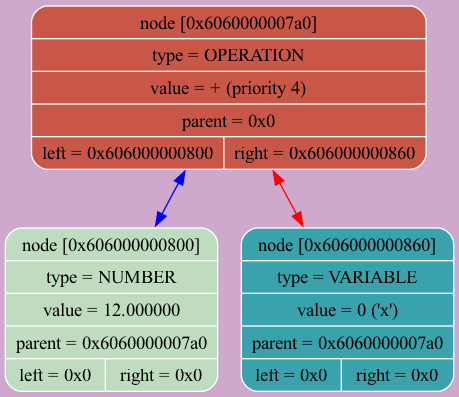 -----------------------------------END-TreeDump------------------------
DUMP NUMBER 10 -----------------------------------TreeDump------------------------DIFF TREE DUMP 9
tree [0x6080000001a0]: size = 1 variables: { 0 ('x') = -666.000000 1 ('y') = -666.000000 2 ('z') = -666.000000 3 ('a') = -666.000000 4 ('b') = -666.000000 IMAGE 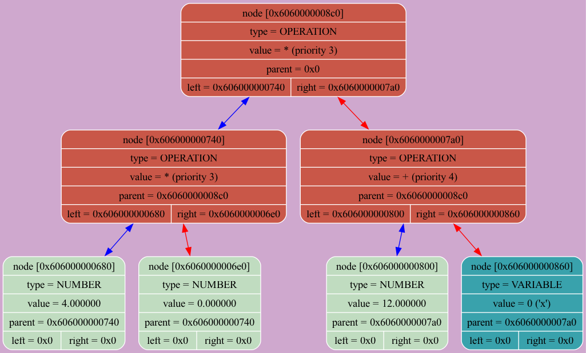 -----------------------------------END-TreeDump------------------------
DUMP NUMBER 11 -----------------------------------TreeDump------------------------DIFF TREE DUMP 10
tree [0x608000000120]: size = 8 variables: { 0 ('x') = -666.000000 1 ('y') = -666.000000 2 ('z') = -666.000000 3 ('a') = -666.000000 4 ('b') = -666.000000 IMAGE 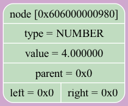 -----------------------------------END-TreeDump------------------------
DUMP NUMBER 12 -----------------------------------TreeDump------------------------DIFF TREE DUMP 11
tree [0x608000000120]: size = 8 variables: { 0 ('x') = -666.000000 1 ('y') = -666.000000 2 ('z') = -666.000000 3 ('a') = -666.000000 4 ('b') = -666.000000 IMAGE 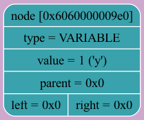 -----------------------------------END-TreeDump------------------------
DUMP NUMBER 13 -----------------------------------TreeDump------------------------DIFF TREE DUMP 12
tree [0x608000000120]: size = 8 variables: { 0 ('x') = -666.000000 1 ('y') = -666.000000 2 ('z') = -666.000000 3 ('a') = -666.000000 4 ('b') = -666.000000 IMAGE 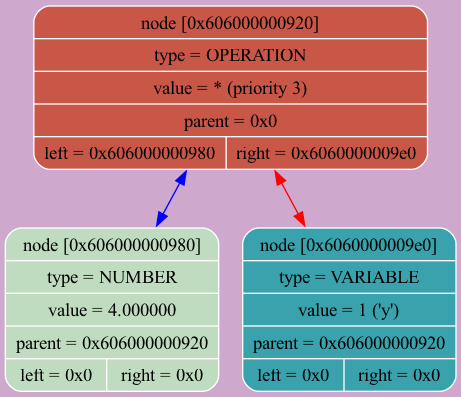 -----------------------------------END-TreeDump------------------------
DUMP NUMBER 14 -----------------------------------TreeDump------------------------DIFF TREE DUMP 13
tree [0x6080000001a0]: size = 1 variables: { 0 ('x') = -666.000000 1 ('y') = -666.000000 2 ('z') = -666.000000 3 ('a') = -666.000000 4 ('b') = -666.000000 IMAGE-----------------------------------END-TreeDump------------------------
DUMP NUMBER 15 -----------------------------------TreeDump------------------------DIFF TREE DUMP 14
tree [0x6080000001a0]: size = 1 variables: { 0 ('x') = -666.000000 1 ('y') = -666.000000 2 ('z') = -666.000000 3 ('a') = -666.000000 4 ('b') = -666.000000 IMAGE -----------------------------------END-TreeDump------------------------
DUMP NUMBER 16 -----------------------------------TreeDump------------------------DIFF TREE DUMP 15
tree [0x6080000001a0]: size = 1 variables: { 0 ('x') = -666.000000 1 ('y') = -666.000000 2 ('z') = -666.000000 3 ('a') = -666.000000 4 ('b') = -666.000000 IMAGE -----------------------------------END-TreeDump------------------------
DUMP NUMBER 17 -----------------------------------TreeDump------------------------DIFF TREE DUMP 16
tree [0x6080000001a0]: size = 1 variables: { 0 ('x') = -666.000000 1 ('y') = -666.000000 2 ('z') = -666.000000 3 ('a') = -666.000000 4 ('b') = -666.000000 IMAGE-----------------------------------END-TreeDump------------------------
DUMP NUMBER 18 -----------------------------------TreeDump------------------------DIFF TREE DUMP 17
tree [0x6080000001a0]: size = 1 variables: { 0 ('x') = -666.000000 1 ('y') = -666.000000 2 ('z') = -666.000000 3 ('a') = -666.000000 4 ('b') = -666.000000 IMAGE 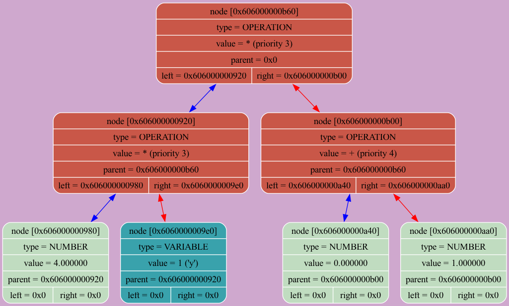 -----------------------------------END-TreeDump------------------------
DUMP NUMBER 19 -----------------------------------TreeDump------------------------DIFF TREE DUMP 18
tree [0x6080000001a0]: size = 1 variables: { 0 ('x') = -666.000000 1 ('y') = -666.000000 2 ('z') = -666.000000 3 ('a') = -666.000000 4 ('b') = -666.000000 IMAGE-----------------------------------END-TreeDump------------------------
DUMP NUMBER 20 -----------------------------------TreeDump------------------------DIFF TREE DUMP 19
tree [0x6080000001a0]: size = 1 variables: { 0 ('x') = -666.000000 1 ('y') = -666.000000 2 ('z') = -666.000000 3 ('a') = -666.000000 4 ('b') = -666.000000 IMAGE-----------------------------------END-TreeDump------------------------
DUMP NUMBER 21 -----------------------------------TreeDump------------------------DIFF TREE DUMP 3
tree [0x6080000001a0]: size = 1 variables: { 0 ('x') = -666.000000 1 ('y') = -666.000000 2 ('z') = -666.000000 3 ('a') = -666.000000 4 ('b') = -666.000000 IMAGE 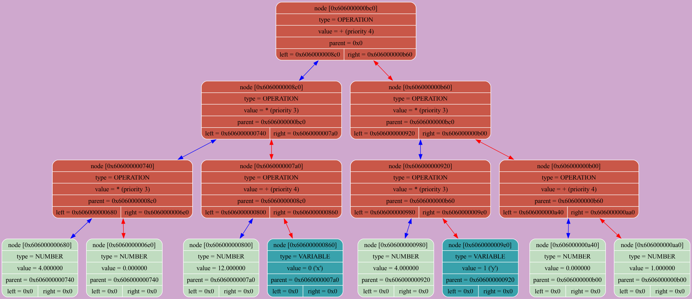 -----------------------------------END-TreeDump------------------------
DUMP NUMBER 22 -----------------------------------TreeDump------------------------DIFF TREE DUMP 20
tree [0x6080000001a0]: size = 18446744073709551614 variables: { 0 ('x') = -666.000000 1 ('y') = -666.000000 2 ('z') = -666.000000 3 ('a') = -666.000000 4 ('b') = -666.000000 IMAGE 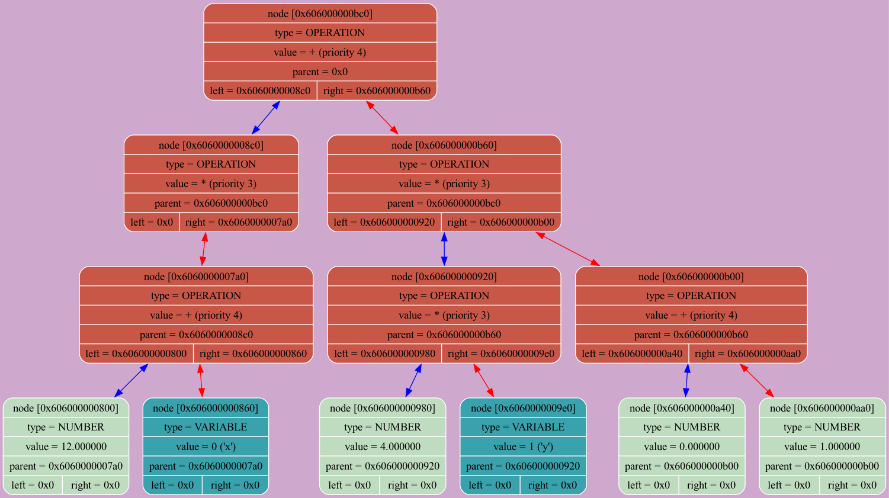 -----------------------------------END-TreeDump------------------------
DUMP NUMBER 23 -----------------------------------TreeDump------------------------DIFF TREE DUMP 21
tree [0x6080000001a0]: size = 18446744073709551614 variables: { 0 ('x') = -666.000000 1 ('y') = -666.000000 2 ('z') = -666.000000 3 ('a') = -666.000000 4 ('b') = -666.000000 IMAGE 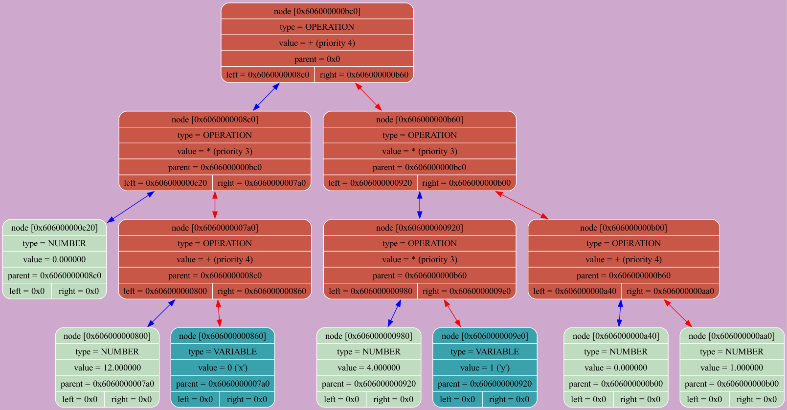 -----------------------------------END-TreeDump------------------------
DUMP NUMBER 24 -----------------------------------TreeDump------------------------DIFF TREE DUMP 22
tree [0x6080000001a0]: size = 18446744073709551611 variables: { 0 ('x') = -666.000000 1 ('y') = -666.000000 2 ('z') = -666.000000 3 ('a') = -666.000000 4 ('b') = -666.000000 IMAGE 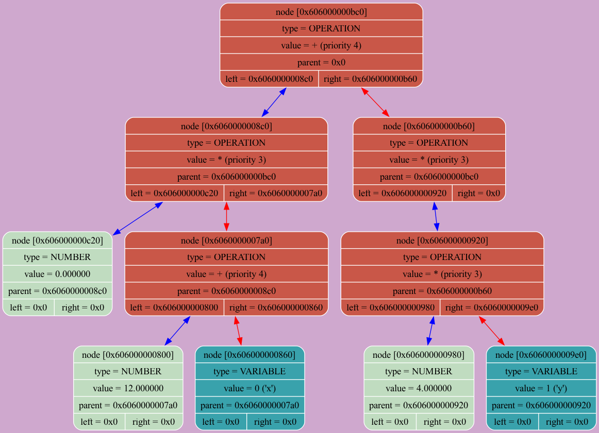 -----------------------------------END-TreeDump------------------------
DUMP NUMBER 25 -----------------------------------TreeDump------------------------DIFF TREE DUMP 23
tree [0x6080000001a0]: size = 18446744073709551611 variables: { 0 ('x') = -666.000000 1 ('y') = -666.000000 2 ('z') = -666.000000 3 ('a') = -666.000000 4 ('b') = -666.000000 IMAGE-----------------------------------END-TreeDump------------------------
DUMP NUMBER 26 -----------------------------------TreeDump------------------------DIFF TREE DUMP 4
tree [0x6080000001a0]: size = 18446744073709551611 variables: { 0 ('x') = -666.000000 1 ('y') = -666.000000 2 ('z') = -666.000000 3 ('a') = -666.000000 4 ('b') = -666.000000 IMAGE 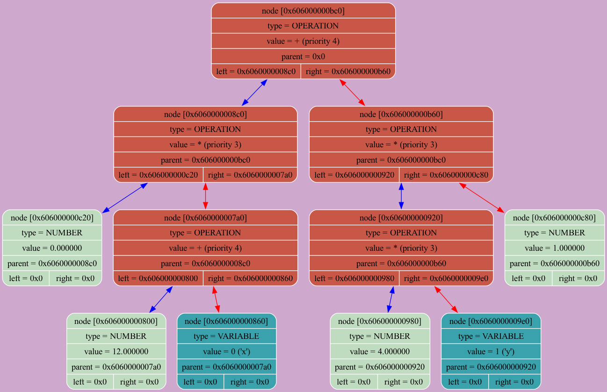 -----------------------------------END-TreeDump------------------------